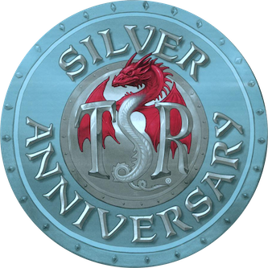

всё в этом списке вышло в 1999 году и представляет собой дичайший раритет.
я прошёл весь путь от затаённого желания увидеть когда-нибудь хоть что-нибудь с такой эмблемой своими глазами, через переговоры с заокеанскими коллекционерами о сбивании цены, до обладания полным набором. как говорил великий Рао, ни о чём не жалею!
коробка 11549
- Holmes' Dungeons & Dragons
B2The Keep on the BorderlandsG1Steading of the Hill Giant ChiefG2Glacial Rift of the Frost Giant JarlG3Hall of the Fire Giant KingS2White Plume MountainI6RavenloftL3Deep Dwarven Delve- The Story of TSR (1975-1999)
мягкая обложка
11327Return to the Keep on the Borderlands11350Dragonlance Classics 15th Anniversary Edition11413Against the Giants: The Liberation of Geoff11434Return to White Plume Mountain — аж в двух экземплярах11397Ravenloft
хорошие сайты по теме
- TSR Silver Anniversary Collector's Edition [BOX SET] на Wayne's books
- Silver Anniversary Series на TSR Archive